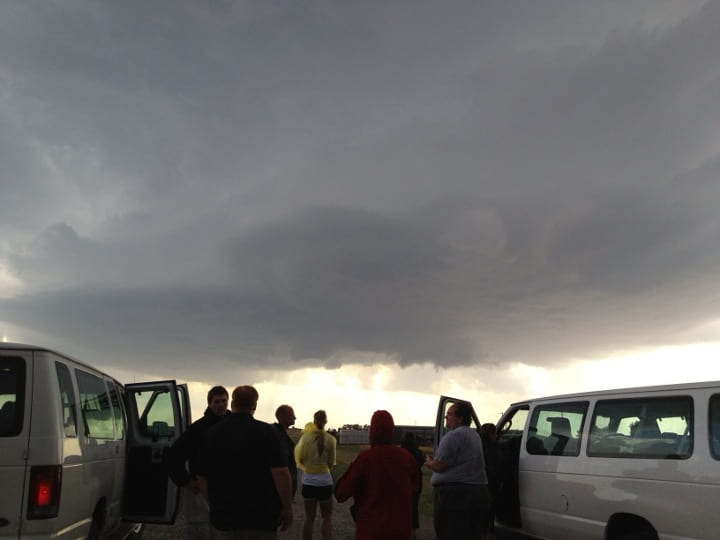

Research Projects › Spatial Thinking in Meteorology
Which spatial reasoning skills are essential to thinking and learning in meteorology?
The Community Framework for Geoscience Education Research (St. John 2018) set out grand challenges to direct current and future researchers toward where community effort should focus. This work responds to a challenge in the cognitive domain of geoscience learning — spatial reasoning — which asks: “What skills and tasks are essential to the different specialties within the geosciences? What spatial and temporal reasoning skills map onto these specific tasks?” (Ryker et al. 2018, p. 70). The project answers that challenge by investigating the spatial reasoning skills important for thinking and learning in meteorology.
